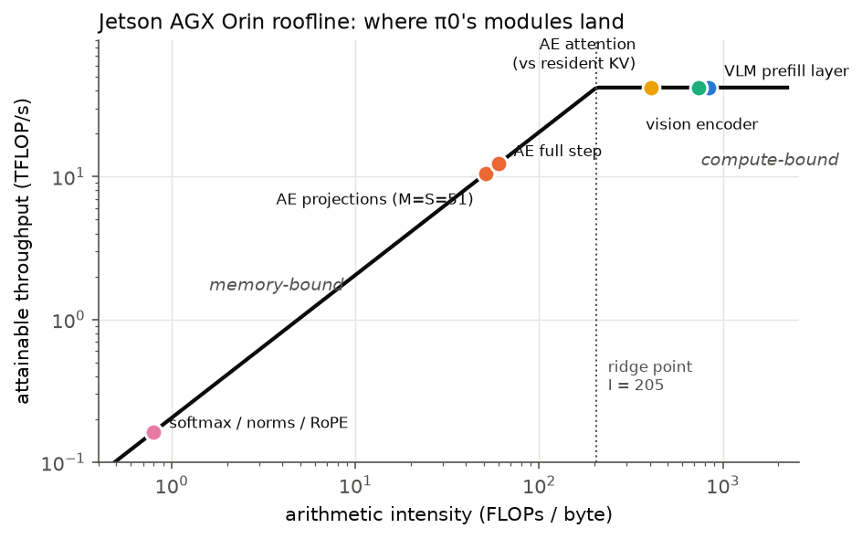
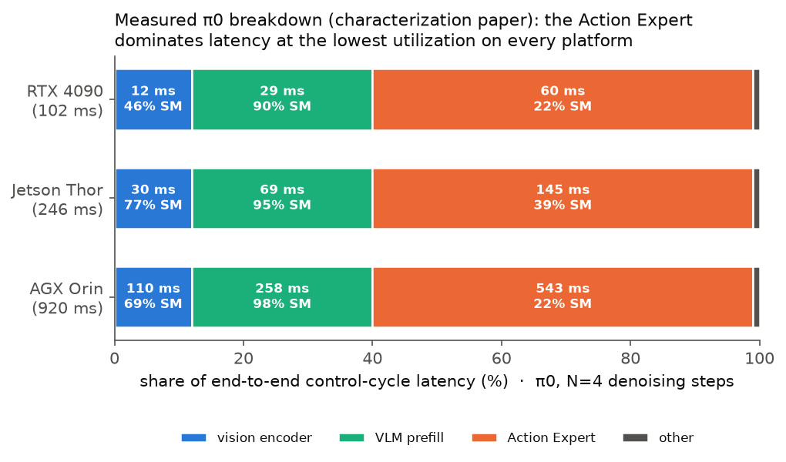

Anatomy of a Flow-Matching VLA: π0 Module by Module
A component-level walk through the π0 Vision-Language-Action model as it actually executes at inference: three SigLIP encoders and a PaliGemma VLM build a prefix KV cache once per control cycle, then a 311.5 M-parameter Action Expert re-reads all of its weights N = 4–10 times to integrate a flow-matching ODE over 51 suffix tokens. Every shape, FLOP count, and arithmetic intensity below is extracted from the openpi source (commit 15a9616) and validated with an abstract-shape trace — 38.70 GFLOPs and 629 MB of weight reads per denoising step.
Overview
Part I of a four-part series. This page explains the algorithm; Part II offloads its memory-bound half onto stock LPDDR5-AiM processing-in-memory, and Part III fixes the ISA so the offload actually wins; Part IV surveys deployment platforms and baselines.
1End-to-end pipeline
One control cycle turns an observation (3 camera images + a language instruction + the robot state) into a chunk of 50 future actions. The model is a two-expert transformer: a large VLM expert reads the observation once, and a small Action Expert generates actions by iterative denoising, attending to the VLM's cached keys and values.
Fig. 1 — One control cycle of π0. The prefix (vision + language) is processed once; the Action-Expert loop on the right is the latency hot spot: 59% of end-to-end time on Jetson AGX Orin despite holding only 311.5 M of the ~3 B total parameters.
The two experts share one attention, not one width
π0 is a mixture-of-experts-over-tokens transformer: prefix tokens flow through gemma_2b weights (d=2048), suffix tokens through gemma_300m weights (d=1024), and the two meet only inside attention, which requires matching head geometry — both experts use 8 query heads × head_dim 256 with a single shared KV head (multi-query attention). During denoising the prefix is frozen: its keys and values are served from the cache, so no gemma_2b weight is touched in the loop.
2Flow matching & the denoising loop
The Action Expert is a conditional velocity field vθ trained by flow matching; inference is Euler integration of an ODE from noise to actions.
Training objective (for context)
Sample a time t ∈ (0,1], Gaussian noise ε, and construct the linear interpolation between noise and the ground-truth action chunk a:
The network learns the constant velocity that transports xt along the straight line from data to noise. (openpi uses the diffusion-style convention t=1 ↔ noise, t=0 ↔ data.)
Inference: Euler integration
x(k+1) = x(k) + Δt · vθ(x(k), tk, obs), tk+1 = tk + Δt (k = 0 … N−1)
Each iteration is one full forward pass of the 18-layer expert over the 51 suffix tokens. Two properties drive everything downstream in this series:
- Serial dependence. x(k+1) needs vθ(x(k)): the N steps cannot be batched or run in parallel. Latency is N × (one step).
- Weight re-streaming. Every step touches all 311.5 M expert parameters (623 MB in bf16) to process only 51 tokens — the source of the Action Expert's low arithmetic intensity (§5, §6).
3Suffix embedding: state, actions, and the timestep
Before the transformer, the raw physical quantities become 51 tokens of width 1024. The timestep is injected here, once per step — not per layer.
| Step | Operation | Shapes |
|---|---|---|
| state token | state_proj: linear on the robot state | [32] → [1, 1024] |
| action tokens | action_in_proj on the current noisy chunk x(k) | [50, 32] → [50, 1024] |
| time embedding | sine–cosine positional embedding of the scalar tk | t → [1024] |
| mixing MLP | concat(action, time) → linear → swish → linear | [50, 2048] → [50, 1024] |
The time embedding sweeps geometric periods from 4×10−3 to 4.0 so the network can resolve both early (coarse) and late (fine) integration times:
The suffix is then [state_token ; action_tokens] = [51, 1024]. The attention mask makes it a block: prefix tokens never see the suffix (their KV was computed without it); the state token attends to the prefix and itself; the 50 action tokens attend to everything — prefix, state, and each other (full attention inside the block, no causal ordering between actions).
Fig. 2 — The block attention mask. During denoising the prefix rows are frozen (cached KV); only the 51 suffix queries execute, so the score matrix is [8 heads, 51, 867].
Variant note: π0.5 moves the state into the discrete prompt and injects t through adaptive RMSNorm (a learned scale/shift/gate per norm site) instead of the concat-MLP. Same layer skeleton otherwise; π0 is the target throughout this series.
4Inside one Action-Expert layer
All 18 layers are identical in shape. Everything below the attention softmax is a skinny matrix product: M = 51 rows against weight matrices of 1024–4096 columns.
Fig. 3 — One of 18 identical Action-Expert layers. Blue boxes are weight matrix multiplies (per-layer weights: WQ 4.19 MB, WKV 1.05 MB, WO 4.19 MB, GeGLU 25.2 MB = 34.6 MB total × 18 layers = 623 MB). Green is elementwise/residual work; orange is attention over the cached prefix.
The math of each block
RMSNorm (variance computed in fp32, learned scale s):
RoPE rotates each (half-split) pair of query/key features by a position-dependent angle; with position p and per-pair timescale τi = 100002i/dh:
Suffix positions continue after the prefix (p = 816 … 866), so relative offsets against cached prefix keys are meaningful. Q is additionally scaled by dh−1/2 = 1/16.
MQA attention — 8 query heads share ONE key/value head. Per head h, with the 867-long key sequence T = [prefix 816 ; suffix 51]:
MQA is what keeps the KV cache small (15 MB instead of 8× that) — and, in Part II, what makes the cache cheap to keep resident inside memory banks.
GeGLU MLP — the gate path is nonlinear, the up path linear, their product goes down:
After layer 18: a final RMSNorm, then action_out_proj maps the last 50 tokens [50,1024]→[50,32] = the velocity vθ for the Euler update.
5Every module: shapes, FLOPs, bytes, arithmetic intensity
Arithmetic intensity I = FLOPs ÷ bytes moved decides which hardware resource binds. Ridge point of Jetson AGX Orin (42 TFLOP/s bf16, 204.8 GB/s): I ≈ 205. Modules above it are compute-bound; below it, memory-bound.
Cycle-level view (once per control cycle vs. once per step)
| Module | Runs | Input → output | Params | FLOPs | Bytes read | I (FLOPs/B) | Regime |
|---|---|---|---|---|---|---|---|
| SigLIP So400m/14 ×3 | 1×/cycle | 3×[224,224,3] → 3×[256, 1152] → project to [768, 2048] | ~428 M | ≈3×0.22 T† | ~0.9 GB | ~700† | compute-bound |
| VLM prefill (gemma_2b, per layer) | 18×/cycle | [816, 2048] → [816, 2048] | 110.1 M | 185.1 G | 220 MB | ≈840 | compute-bound |
| prefix KV cache write | 1×/cycle | → [18, 816, 1, 256] × {K, V} | — | — | 15.0 MB written | — | — |
| Action Expert (whole step) | N×/cycle | [51, 1024] through 18 layers | 311.5 M | 38.70 G | 645 MB | 60.0 | memory-bound |
†Vision estimated as 2·params·tokens; the characterization paper measures it compute-bound at >90% SM utilization, 12% of end-to-end latency. VLM-layer figures (185.1 GFLOPs, 220 MB, I≈840) are the paper's, and independently reproduce our verified per-layer parameter count (110.1 M) at P = 841; we use P = 816 (≤3% difference). The paper quotes AE intensity 64.5 using the nominal 600 MB (“300 M params”) footprint; exact bytes (622.9 MB weights + 16 MB KV + 6.6 MB embed) give 60.0 for the same 38.70 GFLOPs.
Inside one Action-Expert denoising step (per layer ×18, plus per-step ops)
| Op | GEMM [M×K]·[K×N] | FLOPs | Weight/KV bytes | I | Where it runs in Parts II–III |
|---|---|---|---|---|---|
| q_proj | [51×1024]·[1024×2048] | 214.0 M | 4.19 MB | 51 | PIM |
| kv_proj | [51×1024]·[1024×512] | 53.5 M | 1.05 MB | 51 | PIM |
| RoPE(q,k) + scale | elementwise, 51×2304 | 0.7 M | — | <1 | host |
| attn scores | 8× [51×256]·[256×867] | 181.2 M | 0.44 MB (K) | 408 | PIM (KV resident) |
| softmax | elementwise, 8×51×867 fp32 | 1.8 M | — | <1 | host (Part II) → PIM (Part III) |
| attn context | 8× [51×867]·[867×256] | 181.2 M | 0.44 MB (V) | 408 | PIM (KV resident) |
| o_proj | [51×2048]·[2048×1024] | 214.0 M | 4.19 MB | 51 | PIM |
| mlp_gate (+gelu) | [51×1024]·[1024×4096] | 427.8 M | 8.39 MB | 51 | PIM |
| mlp_up | [51×1024]·[1024×4096] | 427.8 M | 8.39 MB | 51 | PIM |
| gate ⊙ up | elementwise, 51×4096 | 0.2 M | — | <1 | host (II) → in-bank (III) |
| mlp_down | [51×4096]·[4096×1024] | 427.8 M | 8.39 MB | 51 | PIM |
| 2× RMSNorm + 2× residual | elementwise, 51×1024 each | 0.5 M | — | <1 | host |
| per-step: suffix embed MLPs | [50×2048]·[2048×1024] et al. | 0.37 G | 6.6 MB | 56 | host |
| per-step: final norm + head + Euler | [50×1024]·[1024×32] + axpy | 3.5 M | 0.07 MB | ~50 | host |
Per denoising step: 18 × (per-layer rows) + per-step rows = 38.70 GFLOPs, 629.4 MB weights, 16.0 MB KV reads. Extracted from the machine-readable trace 04_data/op_trace.csv (351 ops/step) and cross-validated against a jax.eval_shape trace of the real openpi module.
6The two-phase signature (why this matters for hardware)
Measured on Jetson AGX Orin by the characterization study (arXiv:2604.24447), reproduced analytically by our trace:

(“Floor” here means the roofline minimum — bytes that must cross the memory interface divided by its bandwidth. The weights are 150× larger than Orin’s 4 MB L2 cache, so no software can avoid re-streaming them every step; the full baseline ladder from this ideal bound up to the measured 136 ms/step stack is defined in Part II §7.)
The Action Expert dominates latency while starving the GPU: each of its N serial steps must stream 623 MB of weights through a 204.8 GB/s interface to do only 38.7 GFLOPs of work. No amount of extra compute helps — only more effective memory bandwidth, or removing the weight traffic altogether by computing where the weights live. That is the premise Part II puts to the test with LPDDR5 processing-in-memory.
7Measured execution breakdown, from the papers
Everything above is the algorithm on paper; this is how it actually spends its time. The characterization study (arXiv:2604.24447; local copy in the study workspace) profiled π0 end-to-end with Nsight on three NVIDIA platforms — phase shares hold at vision 12% / VLM 28±1% / Action Expert 59±1% everywhere, with the AE always at the lowest hardware utilization.

The same breakdown in numbers (N = 4 denoising steps)
| Platform | end-to-end (ms) | vision (ms / SM%) | VLM (ms / SM%) | Action Expert (ms / SM%) | control rate |
|---|---|---|---|---|---|
| RTX 4090 (lab rig) | 102.3 | 12 / 46% | 29 / 90% | 60 / 22% | 9.8 Hz |
| Jetson Thor | 246.0 | 30 / 77% | 69 / 95% | 145 / 39% | 4.1 Hz |
| AGX Orin | 920.0 | 110 / 69% | 258 / 98% | 543 / 22% | 1.1 Hz |
| Intel B60 Pro | 306.5 | shares not profiled (leaderboard entry) | 3.3 Hz | ||
| Ascend 310P | 818.0 | shares not profiled (leaderboard entry) | 1.2 Hz | ||
Phase milliseconds = paper’s measured shares × measured end-to-end latency; SM utilizations from the paper’s profiling traces. Our operator trace (§5) reproduces the AE column analytically: 38.70 GFLOPs and 645 MB per step is exactly the paper’s implied AE numerator (64.5 FLOPs/B × 600 MB nominal).
How much of the AE the paper’s own software optimizations recover
| Optimization (paper, π0) | Mechanism | Speedup (platform) | What it says about the breakdown |
|---|---|---|---|
| Model compilation | torch.compile / ATC kernel fusion | 2.90× (4090) · 1.51× (Thor) · 2.34× (310P) | most of the measured stack’s 43×-above-floor gap is launch/fusion overhead — but compilation effectiveness is strongly hardware-dependent |
| DP-Cache (S=4) | skip redundant mid-trajectory denoising steps | 1.29× (4090), −0.6% SR | reduces N, not the per-step cost — each remaining step still re-streams all 623 MB |
| V-AEFusion | overlap stale-KV denoising with the next VLM pass | 1.32× (4090) · 1.14× (Orin) · 1.04× (Thor) | hiding is capped because their AE (2× the VLM) doesn’t fit in the VLM window — only ~5 of 10 steps overlap |
Series & sources
- Part I (this page) — Anatomy of a flow-matching VLA: π0 module by module.
- Part II — Offloading the Action Expert to stock LPDDR5-AiM: ISA, mapping, and why it loses 5.8×
- Part III — Eight problems, six ISA extensions: from 36.7 ms to 4.81 ms per step
- Part IV — Deployment platforms: where robots actually run VLAs & the speed/energy baseline matrix
Sources: openpi @ 15a9616 (model code, all dims verified with file:line references and an abstract-shape trace); “Characterizing Vision-Language-Action Models across XPUs” (arXiv:2604.24447) for measured Orin latency splits and utilization; our operator trace (38.70 GFLOPs/step) matches the paper’s implied AE numerator (64.5 FLOPs/B × 600 MB = 38.7 G) exactly.